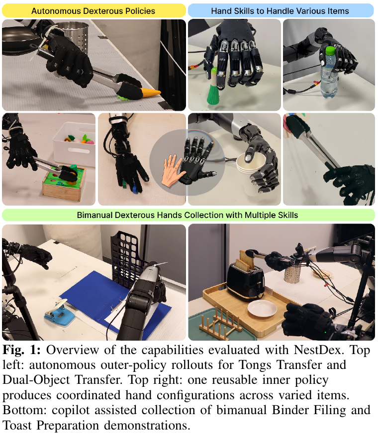
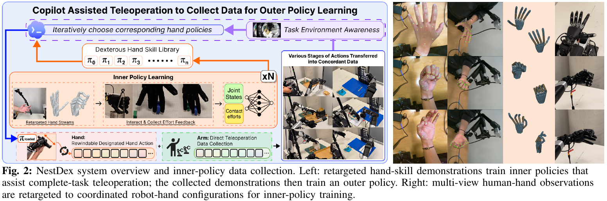
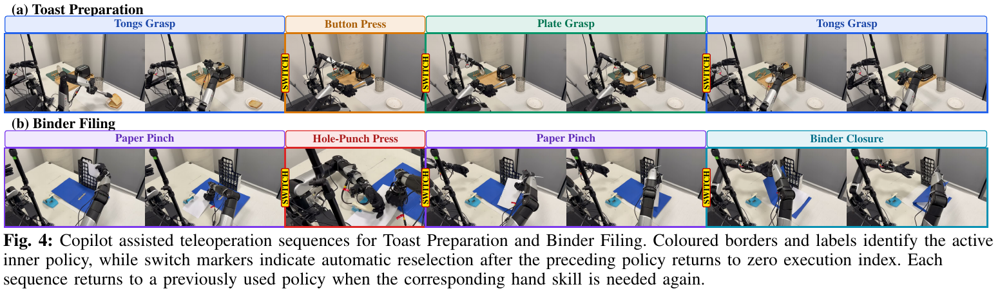
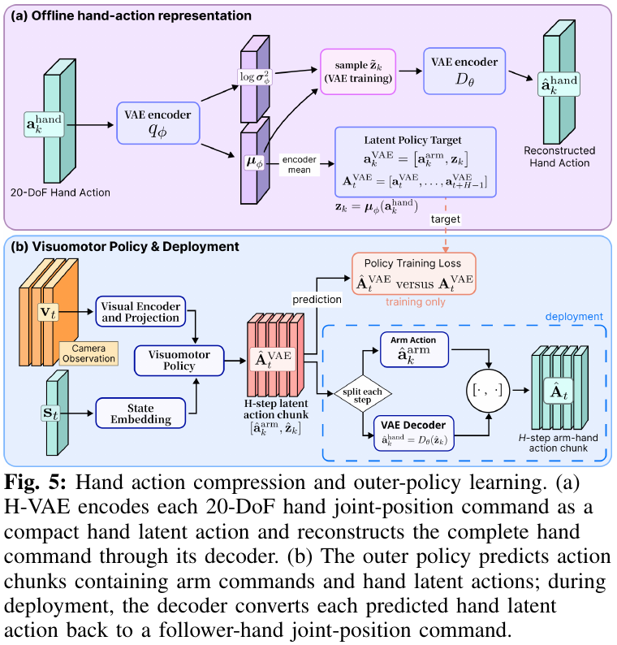
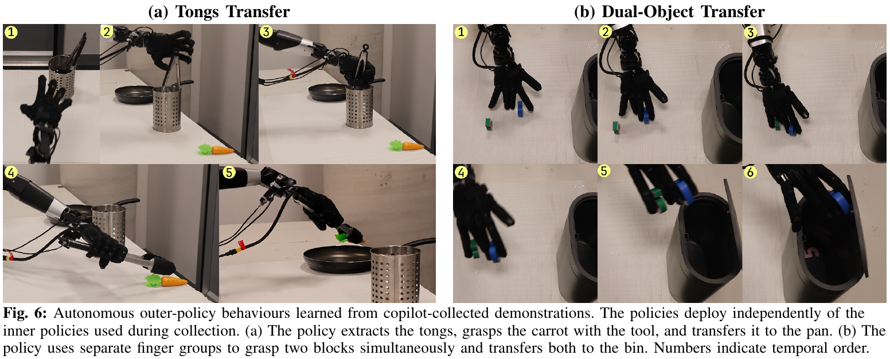
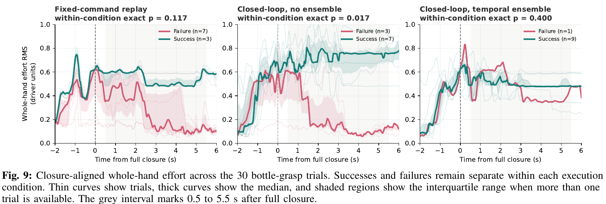
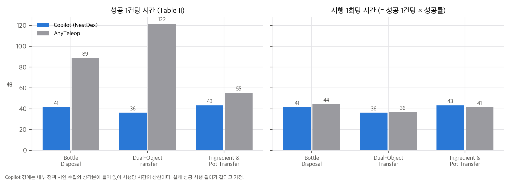
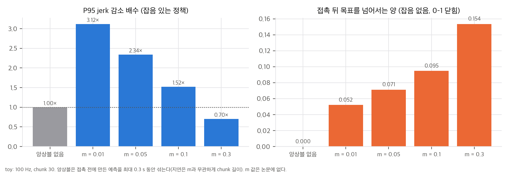
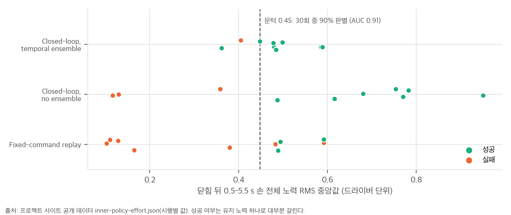
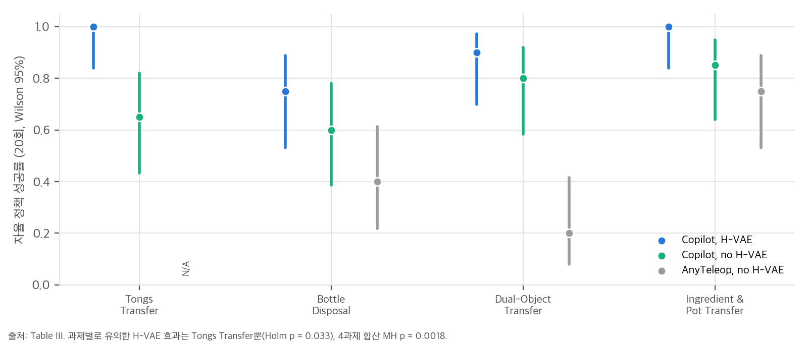

논문 Fig. 1: 자율 outer policy(위 왼쪽), 여러 물체에 쓰는 inner 손 기술(위 오른쪽), 양팔 과제의 copilot 수집(아래).

논문 Fig. 2: 리타겟팅한 손 기술 시연으로 inner policy를 학습하고(왼쪽 위), copilot 텔레옵으로 모은 시연으로 outer policy를 학습한다.
cheese-zj/nestdex-site @ 63f96e6)뿐이고, 그 안에 Fig. 9–10의 시행별 데이터 파일(data/inner-policy-effort.json)이 있습니다(04 C5).한 줄 요약: 다지 손 텔레옵에서 사람은 팔과 1-DoF 클러치만 조종하고, 손가락은 미리 학습한 **고유수용감각 기반 "손 기술" 정책(inner policy)**이 만든다. VLM이 과제 단계마다 쓸 기술을 고른다. 이렇게 모은 시연으로 배포 때는 inner policy 없이 팔과 손을 함께 제어하는 visuomotor 정책(outer policy)을 학습한다.
논문의 기여는 세 가지입니다(Sec. I).
[inner 학습] 여러 카메라로 사람 손 3D 재구성 → AnyTeleop식 벡터 리타겟팅(Huber, Eq. 3) → 로봇 손 실행
기록 (q_t, e_t) = 손 관절 위치 20 + 관절 effort 20 → 기술마다 시연 10개 → 기술마다 inner policy 하나
proprio Transformer(enc 4, dec 1): 최근 30스텝 (q, e) → 다음 30스텝 관절 위치 chunk (Eq. 4)
▼
[copilot 수집] leader 팔 관절 → follower 팔 관절 (직접 대응)
leader 클러치 c_t → 진행도 p_t (Eq. 6) → 목표 index s_t (Eq. 7) → 현재 index r_t를 한 칸씩 따라감 (Eq. 8)
r 증가: inner policy를 최신 proprio로 질의 + temporal ensembling(Eq. 2) / r 감소: 버퍼의 이전 명령 재생
r = 0까지 되돌리면 VLM(손목 카메라 + 기술 설명 목록)이 다음 기술을 고름
▼
[outer 학습] 과제당 시연 20개 → H-VAE(20 → 10, [128, 64], 과제별) → 행동 = [팔 관절 7, 손 latent 10]
visuomotor Transformer(enc 4, dec 1) + DINOv3 임베딩, 256×256 RGB → 100스텝 chunk, BC (Eq. 10)
배포: 매 스텝 질의 + temporal ensembling, 손 latent는 H-VAE decoder로 관절 명령

논문 Fig. 4: Toast·Binder 과제의 copilot 수집 순서. 색 테두리는 활성 기술, SWITCH는 index가 0으로 돌아간 뒤의 자동 재선택.

논문 Fig. 5: (a) H-VAE가 손 명령 20차원을 latent로 압축, (b) outer policy가 팔 명령 + 손 latent chunk를 예측.
03 §3).| 과제 | Copilot 시간(s) / 성공 | AnyTeleop 시간(s) / 성공 |
|---|---|---|
| Tongs Transfer | 44.33 / 20/20 | N/A / 0/20 |
| Bottle Disposal | 41.37 / 20/20 | 88.88 / 10/20 |
| Dual-Object Transfer | 36.19 / 20/20 | 121.63 / 6/20 |
| Ingredient and Pot Transfer | 43.26 / 20/20 | 55.29 / 15/20 |
| Toast Preparation | 327.46 / 20/20 | N/A / 0/20 |
| Binder Filing | 221.80 / 20/20 | N/A / 0/20 |
04 C1).03 §1). 실패 시행과 성공 시행의 길이가 같다는 가정이 필요하고, Copilot 쪽은 기술 시연 수집 상각분까지 포함한 값입니다.| 조건 | Tongs | Bottle | Dual-Object | Ingredient |
|---|---|---|---|---|
| Copilot, no H-VAE | 65% | 60% | 80% | 85% |
| Copilot, H-VAE | 100% | 75% | 90% | 100% |
| AnyTeleop, no H-VAE | N/A | 40% | 20% | 75% |
04 C3).
논문 Fig. 6: copilot 시연으로 학습한 outer policy의 자율 실행(Tongs Transfer, Dual-Object Transfer).
04 C4).03 §4).
논문 Fig. 9: 물병 잡기 30회의 닫힘 정렬 손 전체 노력. 공개 데이터로 재현한 그림이 03 §4에 있다.
03 §5).Q5는 학습 물체 4개 안에서의 적응이고 새 물체 일반화가 아니라고 밝힙니다(Sec. V-C). 닫힌 루프 두 조건의 성공률 차이는 현재 표본으로 확정할 수 없다고 씁니다. 그 밖의 한계 절은 없습니다.
02 §3).online_rtc, 앙상블 없음이 online_no_rtc입니다. 본문은 RTC(Real-Time Chunking)가 아니라 ACT식 지수 가중 평균(Eq. 2)을 썼다고 씁니다. 이름만의 문제인지 다른 알고리즘인지는 코드가 없어 확인할 수 없습니다(04 C6).04 C5).03 §2).스크립트는 analysis/table_check.py(표·공개 데이터·학습 규모, 결과 table_check_results.json)와 analysis/ensemble_toy.py(Eq. 2 toy, 결과 ensemble_toy_results.json)입니다. 둘 다 numpy 단일 스레드로 몇 초 안에 끝납니다.
성공 1건당 시간 = 전체 시행 시간 / 성공 수이므로, 성공률 ρ를 곱하면 시행 1회당 평균 시간이 됩니다.
t_attempt = t_per_success × ρ
| 과제 | Copilot (ρ = 1) | AnyTeleop | 비 (AnyTeleop / Copilot) |
|---|---|---|---|
| Bottle Disposal | 41.37 s | 88.88 × 0.50 = 44.44 s | 1.07 |
| Dual-Object Transfer | 36.19 s | 121.63 × 0.30 = 36.49 s | 1.01 |
| Ingredient and Pot Transfer | 43.26 s | 55.29 × 0.75 = 41.47 s | 0.96 |

해석: 한 번 시도하는 데 걸리는 시간은 두 방식이 거의 같습니다. 성공 1건당 시간 차이(1.28–3.36배)는 전부 실패 횟수에서 나옵니다. Copilot 값에는 기술 시연 수집의 상각분이 들어 있으므로, 실제 텔레옵 시행은 이보다 조금 더 짧습니다. 이 계산에는 실패 시행과 성공 시행의 길이가 같다는 가정이 필요합니다. 실패를 일찍 포기했다면 AnyTeleop 시행은 실제로 더 길었을 수 있습니다. 논문은 시행별 시간을 주지 않습니다.
예측 K개를 오래된 것부터 i = 0, …, K − 1로 놓고 w_i = exp(−m i)입니다. 가장 오래된 예측의 가중치가 가장 크고, m이 클수록 오래된 쪽에 더 쏠립니다. 본문의 "작은 m이 최근 관측 기반 예측에 상대적으로 더 큰 가중"은 맞지만, m → 0에서도 가중은 균등까지만 갑니다. 최신 예측이 가장 큰 가중을 받는 경우는 없습니다.
K = 30(inner chunk, 100 Hz)일 때 실행되는 명령의 평균 나이는 다음과 같습니다(ensemble_toy.py E1).
| m | 평균 나이 | 최신 예측의 몫 | 가장 오래된 예측의 몫 |
|---|---|---|---|
| 0 (균등) | 145 ms | 3.3% | 3.3% |
| 0.01 (ACT 기본값으로 알려진 값) | 153 ms | 2.9% | 3.8% |
| 0.1 | 211 ms | 0.6% | 10.0% |
| 1.0 | 284 ms | 0.0% | 63.2% |
논문은 m을 적지 않았습니다.
닫기 궤적(0 → 1)을 따라가는 chunk 정책을 만들고, 1.1 s에 물체에 막혀 0.6에서 멈추게 했습니다. 정책은 접촉이 일어난 뒤의 질의에서만 그 사실을 압니다. 예측 잡음은 질의마다 독립인 오프셋 + 기울기 + 백색 잡음이고, 실제 정책의 오차 구조는 모릅니다.
| 실행 방식 | P95 jerk 감소 | 접촉 뒤 목표 초과(잡음 없음) | 정지 수준에 머물기까지(잡음 없음) | 정상 상태 흔들림 |
|---|---|---|---|---|
| 앙상블 없음(새 chunk의 첫 행동) | 1.00× | 0.000 | 80 ms | 0.021 |
| 앙상블 m = 0.01 | 3.12× | 0.052 | 300 ms | 0.006 |
| 앙상블 m = 0.05 | 2.34× | 0.071 | 300 ms | 0.008 |
| 앙상블 m = 0.1 | 1.52× | 0.095 | 300 ms | 0.010 |
| 앙상블 m = 0.3 | 0.70× | 0.154 | 300 ms | 0.018 |

해석:
프로젝트 사이트의 data/inner-policy-effort.json에는 30회 시행 각각의 손 전체 노력 RMS 곡선(0.04 s 간격, −2–6 s)과 유지 구간(0.5–5.5 s) 중앙값이 들어 있습니다.

| 비교 | 결과 |
|---|---|
| H-VAE 유무(Copilot, 4과제) | 합산 73/80 대 58/80, MH p = 0.0018, OR 4.3. 과제별 유의는 Tongs뿐(Holm p = 0.033), 나머지 p = 0.23–0.66 |
| 수집 방식(H-VAE 없음, 3과제) | 합산 MH p = 5.4×10⁻⁴, OR 3.9. 과제별 유의는 Dual-Object뿐(p = 3.6×10⁻⁴) |

정리하면, 효과의 방향은 모든 과제에서 같지만 과제 하나하나를 구분할 만큼 시행이 많지는 않습니다. 합산 검정은 과제별 효과가 같은 방향이라는 가정 위에서만 의미가 있습니다.
이 절은 §2–3(클러치와 접촉 반응)과 §4(공개 노력 곡선)를 넓힌 두 가지 추가 검증입니다. 모든 스크립트는 numpy 단일 스레드로 수 초 안에 끝납니다. 결과는 analysis/extra_*_results.json에 있습니다.
목적. §2의 두 주장을 시험합니다. (a) 실행 index는 주기마다 한 칸이라 클러치를 끝까지 당겨도 기술 하나가 최소 T_max/100 s 걸린다. (b) 앞으로 갈 때 정책을 다시 질의하므로(닫힌 루프), chunk가 길수록(열린 루프 구간이 길수록) 접촉 뒤 반응이 늦어진다. 역방향 복구의 비대칭은 이 toy에서 시험하지 않았습니다(아래 한계).
설정. analysis/extra_clutch_toy.py. 주기 0.01 s, T_max = 300(3 s). 손가락은 1차 지연 x ← x + 0.3(q − x)이고, 물체 표면 x_obj에서 막힙니다. 막혔을 때 힘 f = 50(q − x_obj)+. 시연 명령 q_demo(k) = 0.9 · smoothstep(k/(T_max − 1)). 정책(모사)은 질의할 때 H개의 명령을 내고, 접촉이 관측되면 그 chunk에 "꽉 쥐기" 보정 +0.15를 더합니다(상한 1.0). 클러치는 0–3 s 동안 0에서 1로 올라갑니다. x_obj ∈ {0.5, 0.6, 0.7}, H ∈ {1, 10, 30}(H = 1은 매 틱 질의).
결과.
(a) 속도 상한: 클러치를 0.5 s에 0에서 1로 한 번에 바꾸면 index가 T_max − 1에 닿는 데 2.98 s가 걸렸습니다. 한 틱당 한 칸이라는 식의 예측 2.99 s와 맞습니다.
(b) 접촉 뒤 0.5 s 동안의 힘(평균 / 최댓값), 그리고 전체 최댓값
| x_obj | H = 1 | H = 10 | H = 30 | 전체 최댓값(H와 무관) |
|---|---|---|---|---|
| 0.5 | 13.2 / 18.3 | 12.4 / 18.3 | 10.9 / 18.3 | 25 |
| 0.6 | 12.7 / 17.2 | 12.4 / 17.2 | 9.4 / 17.2 | 20 |
| 0.7 | 12.1 / 15.0 | 10.9 / 15.0 | 7.9 / 15.0 | 15 |
대조(x_obj = 0.6, H = 30, 꽉 쥐기 보정 없음): 0.5 s 평균 5.4, 최댓값 9.7, 전체 최댓값 15.
결론.
목적. §4의 "유지 노력 중앙값(0.5–5.5 s)이 성공을 가른다"는 결과는 판정에 닫힌 뒤 5 s 이후 정보를 씁니다. 닫힌 뒤 몇 초의 정보만으로 성공을 예측할 수 있는지 봅니다. 또 시행 순서(블록 순서)가 노력과 성공에 영향을 주는지 봅니다.
설정. analysis/extra_effort_timing.py. 공개 자료 paper/inner-policy-effort.json(30회, 0.04 s 간격, 0 s = 닫힘 명령 95% 시점)만 씁니다. 시각 t마다 "t 이전 0.5 s 창의 평균 노력"(인과적)을 쓰고, 성공 대 실패의 AUC와 시행 재표본 bootstrap 95% CI(2000회, 시드 고정)를 계산합니다.
결과.
| t (닫힘 뒤, s) | 0.5 | 1.0 | 1.5 | 2.0 | 2.5 | 3.0 | 4.0 | 5.0 | 6.0 |
|---|---|---|---|---|---|---|---|---|---|
| AUC | 0.65 | 0.76 | 0.77 | 0.78 | 0.80 | 0.84 | 0.90 | 0.93 | 0.95 |
| 95% CI 하한 | 0.41 | 0.57 | 0.56 | 0.56 | 0.61 | 0.64 | 0.73 | 0.78 | 0.85 |
참고: 원 논문 방식(유지 중앙값, 0.5–5.5 s, 비인과)의 AUC는 0.91입니다.
블록 순서:
결론.
목적. 청크(action chunk)를 짧게 다시 계획하는 방식, 길게 열린 루프로 실행하는 방식, 시간 앙상블(Eq. 2)을 같은 정책에서 비교합니다. 공개 데이터 없이 직접 만든 시연으로 확인합니다. 정책은 물체 반지름을 입력으로 받지 않습니다. 학습에 없던 반지름에서 열린 루프 재생과 닫힌 루프를 비교합니다.
설정(가정).
analysis/extra_chunk_policy.py → analysis/extra_chunk_policy_results.json. CPU 4스레드, 약 2–3분. 장치: CPU(작은 모델이라 MPS를 쓰지 않음). 패키지: torch 2.15.0, mujoco 4.0.0, numpy 1.26.4, Python 3.12.7.결과. 성공률은 40 에피소드 평균이고, 괄호는 시드 3개의 평균 ± 표준편차입니다.
| 방식 | 전체 | 0.025 m (범위 밖) | 0.035 m | 0.045 m | 0.055 m (범위 밖) |
|---|---|---|---|---|---|
| 시연 1개 열린 루프 재생 | 0.750 | 1.00 | 1.00 | 1.00 | 0.00 |
| 청크 1 (매 스텝 다시 계획) | 0.642 ± 0.120 | 0.33 | 0.90 | 1.00 | 0.33 |
| 청크 4 | 0.933 ± 0.094 | 0.73 | 1.00 | 1.00 | 1.00 |
| 청크 8 | 0.833 ± 0.118 | 0.33 | 1.00 | 1.00 | 1.00 |
| 청크 8 + 시간 앙상블 | 0.867 ± 0.094 | 0.47 | 1.00 | 1.00 | 1.00 |
결론.
cheese-zj/nestdex-site @ 63f96e6의 공개 데이터 data/inner-policy-effort.json(2026-08-17 수정).analysis/table_check.py, analysis/ensemble_toy.py).| # | 주장 (출처) | 재계산 | 판정 |
|---|---|---|---|
| C1 | NestDex가 모든 과제에서 수집 성공률이 더 높다 (Table II) | 20/20 대 0, 10, 6, 15, 0, 0 (20회). Fisher p: 1.5×10⁻¹¹ (세 과제), 4.4×10⁻⁴, 3.3×10⁻⁶, 0.047. Holm 뒤에도 모두 0.05 이하 | ✅ (Ingredient는 경계) |
| C2 | 직접 비교 가능한 모든 과제에서 성공 1건당 시간이 더 짧다 (Table II) | 맞지만, 시행 1회당 시간은 0.96–1.07배로 같음. 시간 이득은 성공률에서 나옴 | ✅ 수치 / ⚠️ 해석 (03 §1) |
| C3 | H-VAE가 4과제 모두에서 일관되게 개선한다 (Table III, Q3) | 방향은 4/4. 과제별 유의는 Tongs뿐(13/20 → 20/20, Holm p = 0.033). 합산 MH p = 0.0018 | ⚠️ 과제별로는 미확정 |
| C3b | Copilot 시연이 AnyTeleop 시연보다 자율 정책을 낫게 만든다 (Table III, Q2) | 과제별 유의는 Dual-Object뿐(16/20 대 4/20). 합산 MH p = 5.4×10⁻⁴. AnyTeleop + H-VAE 칸 없음 | ⚠️ 부분 |
| C4 | 고정 재생 대 앙상블 p = 0.0198 (Sec. V-C) | 양측 Fisher 정확검정 0.01977로 일치. 3쌍 Holm 보정 시 0.059 | ✅ 수치 / ⚠️ 다중비교 |
| C4b | 앙상블 없음의 jerk가 2.30배 (Fig. 7) | Fig. 7(c)의 0.21 s 창 값과 같음. 0.11 / 0.31 s 창에서 1.94 / 2.03배, 제한 전 2.84–3.62배 | ✅ |
| C5 | Fig. 9–10 노력 분석 (within-condition p 0.117, 0.017, 0.400) | 공개 데이터로 유지 중앙값(최대 오차 0.003)과 정확 Mann–Whitney p 6개가 모두 재현됨. 성공끼리 앙상블 없음 > 앙상블(p = 0.0012)도 확인 | ✅ (03 §4) |
| C5b | (재분석) 유지 노력으로 성공을 가를 수 있는가 | 30회 합산 AUC 0.91, 문턱 0.45에서 90% 정확 | 새 관찰 |
| C5c | (재분석) 시행 순서 | 조건별 2–4회 블록, 번호 14·24·30·31·40 누락 | ⚠️ 무작위화 안 됨 |
| C6 | 앙상블은 Eq. 2(ACT식 지수 가중 평균)다 | 공개 데이터의 조건 id가 online_rtc / online_no_rtc. RTC(Real-Time Chunking)를 가리키는 이름일 수 있음 |
❓ 확인 불가 |
| C7 | 하나의 잡기 정책이 물체 4개에서 다른 접촉 형태를 만든다 (Fig. 3) | 정성 결과. 시연 10개를 500–3,600 epoch 학습(03 §5). 저자도 학습 조건 안 적응이라고 한정 |
✅ (범위 좁음) |
| C8 | 선택기가 단계마다 맞는 기술을 고른다 (Q6) | 정성 예시 2개. 선택 정확도, 오선택 횟수, VLM 이름 없음 | ❓ 정량 근거 없음 |
| C9 | 같은 플랫폼 비교로 하드웨어 교란을 없앴다 (Sec. V) | 하드웨어는 같지만 작업자 1명, 기준선 1개(AnyTeleop), 시행 순서 정보 없음 | ⚠️ |
| 항목 | 영향 |
|---|---|
| temporal ensembling의 m | 지연과 jerk가 m에 따라 크게 달라짐(03 §3) |
| VLM 모델과 프롬프트 | 선택 정확도·지연을 재현할 수 없음 |
| outer policy 제어 주기 | chunk 100이 몇 초인지 모름(1–10 s) |
| 과제별 inner 기술 수와 기술 시연 길이(T_max) | 상각 시간, 클러치 속도 상한, 학습 epoch를 모름 |
| H-VAE 복원 오차, KL 가중치 | 손 명령 정확도 상한을 모름 |
| 추론 지연(outer, 매 스텝 질의) | 100스텝 앙상블이 실시간인지 모름 |
| 작업자 수, 시행 순서, 실패 시행 길이 | C2 해석과 C9 공정성 판단에 필요 |
inner-policy-effort.json(46 KB)에는 time(201점, −2–6 s), holdWindowSec [0.5, 5.5], 조건 3개 × 시행 10개(episode, outcome, holdMedian, effort 201점), 조건별·성공끼리 정확 Mann–Whitney 결과가 들어 있습니다. 정렬 기준은 "공통 위상 규칙의 95% 닫힘 명령 시점"이고, 본문은 "full closure"라고 씁니다.
불가능합니다. 코드, 학습된 inner·outer policy, H-VAE, 시연 데이터가 공개되지 않았습니다. 하드웨어도 특정 조합입니다(Piper Nero 7-DoF leader·follower 팔, 1-DoF 클러치, 20-DoF WujiHand I, 손목 카메라, 기술 시연용 보정 다중 카메라).
| 단계 | 판단 |
|---|---|
| 표·공개 데이터 재계산, 앙상블 toy | ✅ 완료(numpy, 몇 초) |
| 클러치(Eq. 6–8) + 앙상블(Eq. 2) 시뮬레이션 | ✅ 설치 없이 가능. toy를 확장하면 됨 |
| inner policy(작은 proprio Transformer, 입력 30 × 40, 출력 30 × 20) 학습 | 조건부. 규모가 작아 torch(MPS 또는 CPU)로 충분할 것으로 보이지만 torch 설치 승인이 필요하고, 손 시연 데이터가 없음(시뮬레이터 손으로 대체해야 함) |
| H-VAE(20 → 10, [128, 64]) | 조건부. 위와 같음. 공개 손 자세 데이터로 시험 가능 |
| outer policy(DINOv3 + Transformer, 256×256, chunk 100) | 조건부. 추론은 MPS로 될 수 있지만 DINOv3 가중치 다운로드(라이선스 동의)와 시연 데이터가 필요 |
| 실물 파이프라인 | 불가. 하드웨어 필요 |
CUDA 전용 요소는 논문에 드러나지 않습니다. 계산 규모는 작은 편입니다(inner 20,000 step × 256, outer 50,000 step × 8). 그래서 장벽은 GPU가 아니라 하드웨어와 시연 데이터입니다.
쉽습니다. 핵심은 세 부분입니다.
어려운 것은 기술 시연을 모을 수단(리타겟팅 장비나 장갑)과 기술 목록 설계(과제를 몇 개의 손 기술로 나눌지)입니다. 기존 다지 손 텔레옵 설비가 있다면 "손은 기술이, 팔은 사람이" 구조는 바로 옮길 수 있습니다. 비교 실험을 할 때는 시행 1회당 시간, 작업자 여러 명, 무작위 순서를 함께 넣어야 이 논문의 빈칸을 채울 수 있습니다.
번호 [n]은 논문의 참고문헌 번호입니다. arXiv ID는 논문 참고문헌 목록에 적힌 값을 옮겼습니다. 각 논문을 따로 열어 검증하지는 않았습니다(§2의 ACT 가중치 규약은 예외로 아래에 적었습니다).
[다지 손 텔레옵: 사람이 손가락까지 직접 지정]
모션캡처 장갑 DexMV/Rajeswaran [7], DexCap [8], DOGlove [9]
카메라 손 자세 추정 DexPilot [10], Robotic Telekinesis [11], AnyTeleop [4] ← 이 논문의 기준선이자 리타겟팅 출발점
│
[손은 정책이, 팔은 사람이: shared autonomy]
Cui et al. [12] arXiv:2511.00139 — VR 팔 텔레옵 + 자율 손 VLA로 데이터 수집 ← 가장 가까운 선행 연구(비교 없음)
│
[기술 기반 계층 정책]
options [13], 잠재 기술 공간 [14]–[16], SayCan [18], 교차 모달 지시 [19]
│
★ NestDex: proprio 손 기술(BC) + 1-DoF 클러치 진행도 + VLM 기술 선택으로 수집
→ 수집 장치를 모두 뺀 outer visuomotor 정책(H-VAE 손 latent)으로 배포
차별점 요약: shared autonomy [12]처럼 손을 정책에 맡기지만, (1) 작업자가 1-DoF 클러치로 기술의 진행도를 앞뒤로 조절하고, (2) 단계 전환을 VLM이 고르며, (3) 그 장치들은 배포에서 빠진다는 점이 다릅니다. 계층 정책 연구 [13]–[19]에서는 선택기와 기술이 배포에도 남는데, NestDex는 수집에만 씁니다.
| 역할 | 출처 | 이 논문에서의 쓰임 |
|---|---|---|
| 손 리타겟팅 | AnyTeleop [4] 벡터 리타겟팅 | 잔차를 Huber [28]로 바꾸고 여러 카메라 삼각측량을 더함(Eq. 3) |
| action chunk + temporal ensembling | ACT [27] (Zhao et al., RSS 2023) | Eq. 1–2. 가중치 w_i = exp(−m i), i = 0이 가장 오래된 예측으로 ACT 규약과 같음(ACT 원 논문의 서술과 대조, 내 사전 지식) |
| 잠재 행동 | VAE [26]; 관련 PLAS [20], LASER [21], VQ-ACE [22], BeT [23], VQ-BeT [24], Liconti et al. [25] | 손 명령 20 → 10차원(H-VAE), posterior 평균을 목표로 사용 |
| 시각 표현 | DINOv3 [30] arXiv:2508.10104 | outer policy 입력 임베딩 |
| BC | ALVINN [29] | Eq. 10 |
| 하드웨어 | Piper Nero 7-DoF 팔, WujiHand I 20-DoF 손 | leader-follower 플랫폼 |
| 논문 | 관계 |
|---|---|
DexScrew (dexscrew/) |
가장 가까운 아이디어입니다. 둘 다 "작업자는 팔(손목)을 조종하고 손가락은 학습된 기술이 맡는" 텔레옵으로 데이터를 모은 뒤, 그 데이터로 팔·손을 함께 제어하는 BC 정책을 학습합니다. 다른 점: DexScrew의 기술은 시뮬레이션 RL(회전 gait)이고 트리거로 켜고 끕니다. NestDex의 기술은 리타겟팅한 사람 시연의 BC(시연 10개)이고, 클러치로 진행도를 앞뒤로 조절하며, VLM이 여러 기술 중 하나를 고릅니다. DexScrew는 촉각을, NestDex는 관절 effort를 기술의 입력으로 씁니다. |
Contact-Grounded Policy (contact_grounded_policy/) |
CGP는 촉각을 예측해 compliance 목표로 바꿉니다. NestDex는 effort를 inner policy 입력으로만 쓰고, outer policy의 목표는 관절 위치입니다. 접촉력을 목표로 삼지는 않습니다. 공개 데이터에서 유지 노력이 성공을 거의 가른다는 결과(03 §4)는 CGP처럼 힘을 목표에 넣는 방향의 근거가 됩니다. |
DexForce (dexforce/) |
DexForce는 kinesthetic 시연의 힘으로 "force-informed" 행동 목표를 만듭니다. NestDex는 effort를 기록하지만 행동 목표에 반영하지 않습니다. 두 방법을 합치면, 클러치 수집 시연의 effort로 목표 관절 위치를 보정하는 실험이 가능합니다. |
GPT-as-Tactile-Policy (gpt6_astra_tactile/) |
둘 다 접촉 신호(촉각/effort)를 정책 입력으로 씁니다. GPT-as-Tactile-Policy는 LLM이 정책이고, NestDex는 VLM을 기술 선택기로만 씁니다. |
PaceVLA (pacevla/) |
둘 다 action chunk를 어떻게 실행하느냐가 성능을 바꾼다는 문제를 다룹니다. NestDex는 temporal ensembling(Eq. 2)으로 부드럽게 하고, PaceVLA는 시간 양자화로 빠르게 합니다. NestDex의 앙상블은 오래된 예측에 가중을 두므로 접촉 뒤 반응이 늦어질 수 있습니다(03 §3). |
GNR, FlashDexRetarget (gnr/, flashdexretarget/) |
사람 손 → 로봇 손 리타겟팅 계열입니다. NestDex는 운동학 리타겟팅(AnyTeleop식)을 기술 시연 수집에만 쓰고, 물리 기반 리타겟팅은 쓰지 않습니다. 대신 실물 로봇에서 실행한 결과를 기록하므로 물리 정합성이 자동으로 보장됩니다. |
| 주제 | 관련성 | 근거 수준 |
|---|---|---|
| Real-Time Chunking(RTC, Physical Intelligence) | 공개 데이터의 조건 id가 online_rtc입니다. chunk 경계를 inpainting으로 잇는 방법이라 ACT식 평균과 다릅니다. 어느 쪽을 썼는지 확인이 필요합니다 |
공개 데이터 id + 내 사전 지식 |
| 공유 자율의 arbitration(사람·정책 명령 혼합) 연구 | 클러치 진행도는 "사람이 정책의 시간축을 쥐는" 특수한 arbitration입니다 | 내 해석 |
| 작업 부하 평가(NASA-TLX 등) | "작업자 부담 감소" 주장을 직접 재는 표준 도구입니다. 논문에 없습니다 | 내 사전 지식 |
한계: 4절과 ACT 가중치 규약은 내 사전 지식에 근거합니다. 게시 전에 원문을 직접 확인해야 합니다.
| 저장소 | 무엇인가 | 공식 여부 | 라이선스 | ★ | 마지막 push | 확인 커밋 |
|---|---|---|---|---|---|---|
| (NestDex 코드) | inner·outer policy, 클러치, H-VAE | 미공개 | — | — | — | 프로젝트 페이지·논문에 코드 링크 없음 |
| cheese-zj/nestdex-site | 프로젝트 웹사이트(React 정적 사이트, 영상, paper.pdf, 공개 데이터 public/data/inner-policy-effort.json) |
공식(웹사이트) | 표기 없음 | 0 | 2026-08-17 | 63f96e6 |
| dexsuite/dex-retargeting | AnyTeleop 리타겟팅 구현(Eq. 3의 출발점, 기준선) | 기준선 구성 요소 | MIT | 1,311 | 2025-08-21 | 3f56141 |
| tonyzhaozh/act | ACT, temporal ensembling(Eq. 2) 원 구현 | 구성 요소 출처 | MIT | 2,323 | 2024-07-23 | 742c753 |
| facebookresearch/dinov3 | 시각 임베딩 | 구성 요소 | DINOv3 License(GitHub 표기 NOASSERTION) | 11,682 | 2026-11-02 | 6876159 |
| wuji-technology/wujihandpy | WujiHand SDK(C++ + Python) | 하드웨어 | MIT | 40 | 2026-08-24 | 468e169 |
| agilexrobotics/piper_sdk | Piper 팔 SDK(Nero 전용 SDK는 찾지 못함) | 하드웨어 | MIT | 420 | 2026-10-14 | b847e53 |
가장 가까운 선행 연구인 [12] arXiv:2511.00139의 코드 저장소는 abs 페이지와 검색에서 찾지 못했습니다.